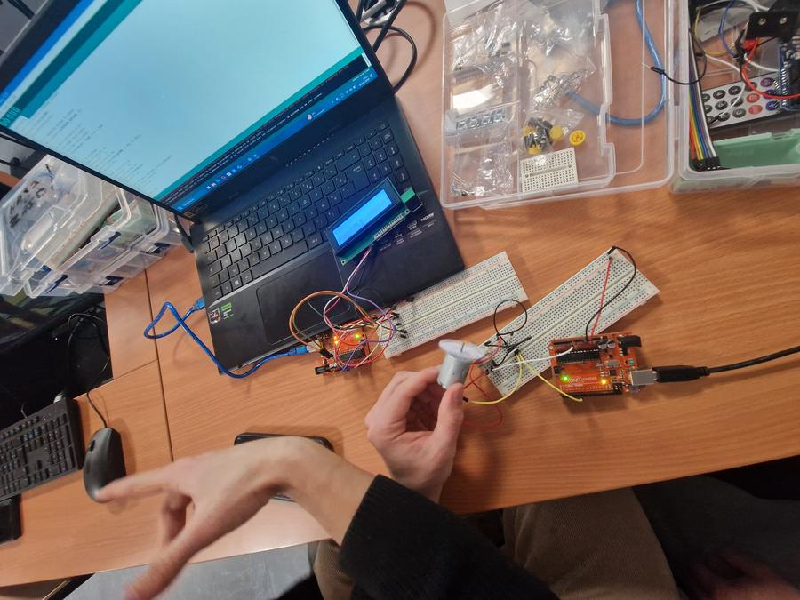
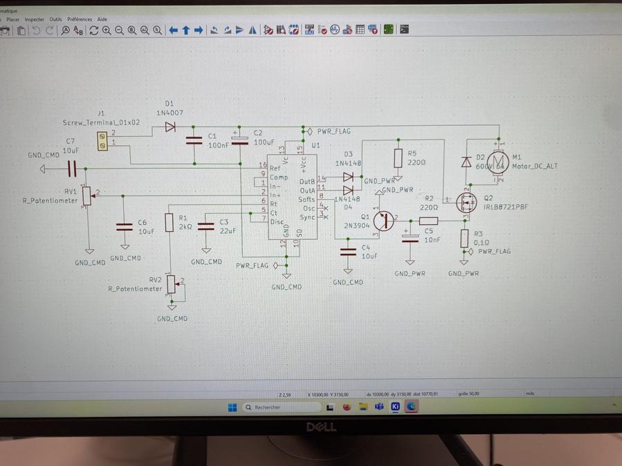
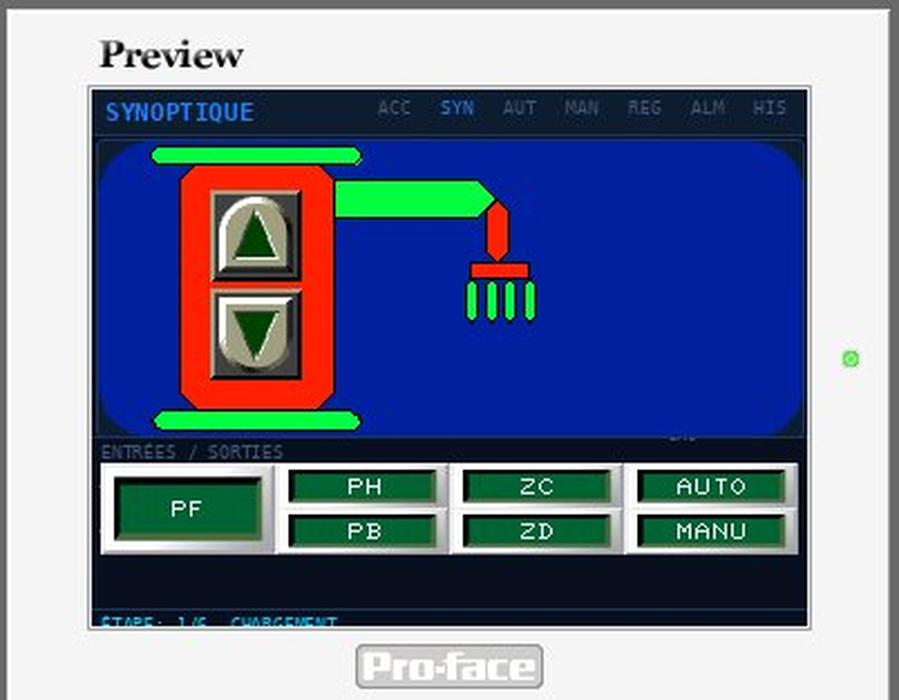
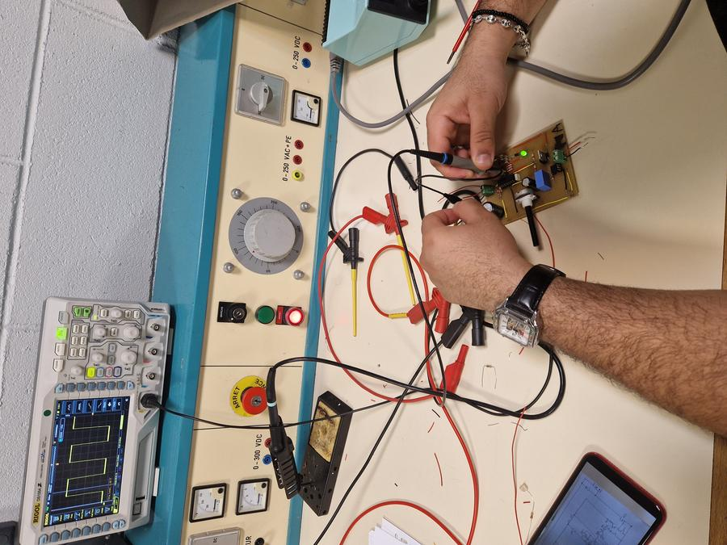
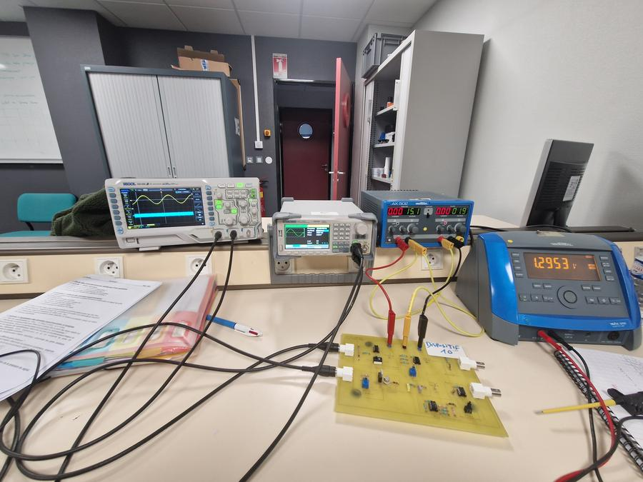
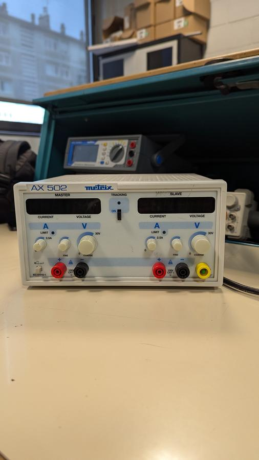
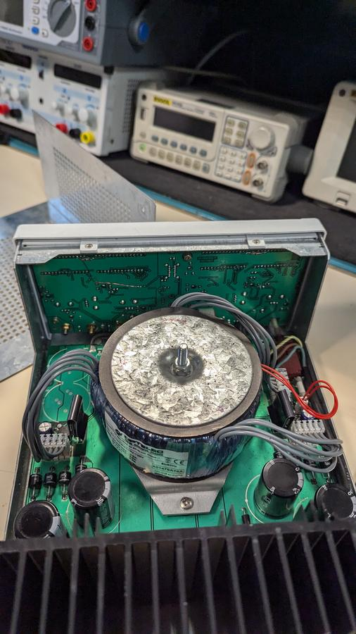
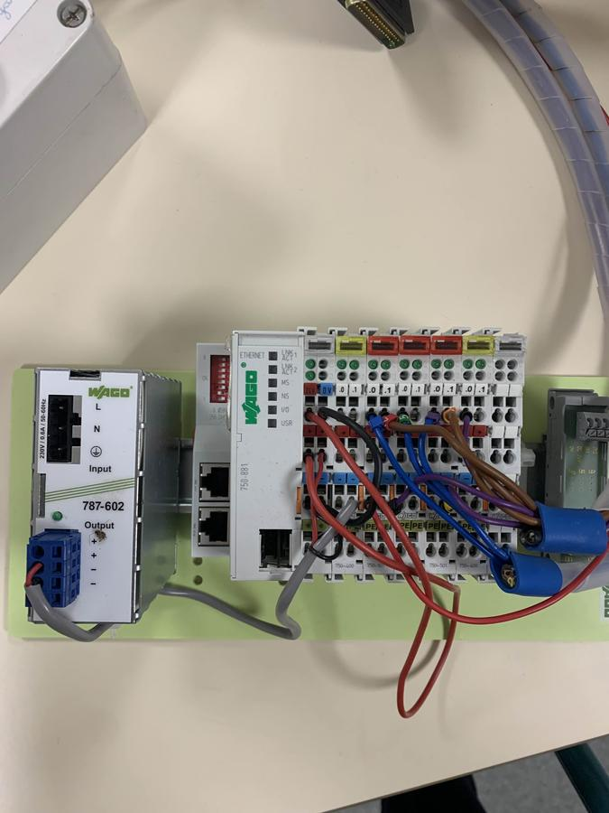
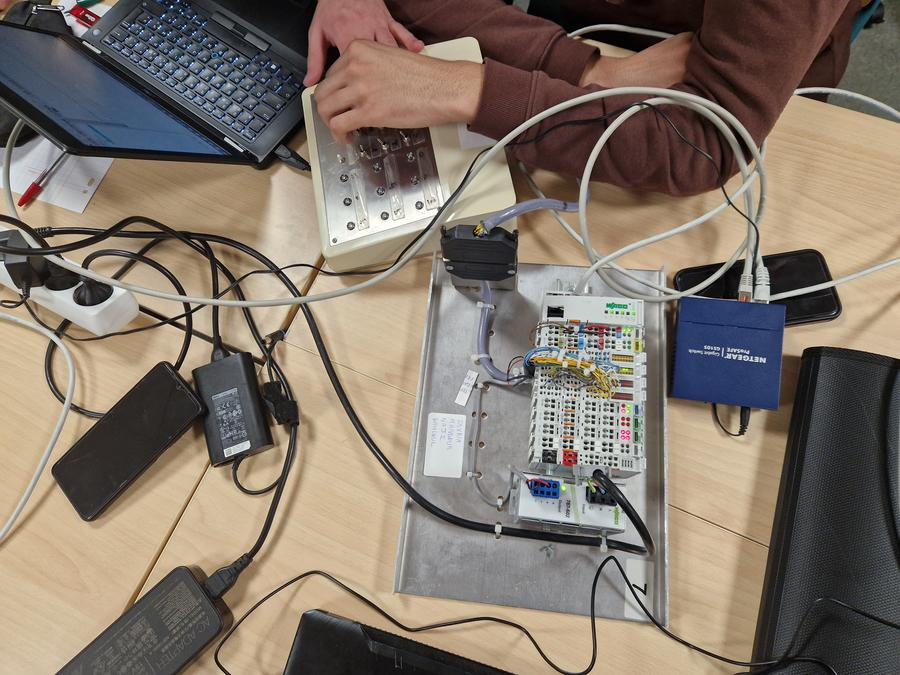

Apprenti Chargé de Conception chez Enedis — étudiant en Génie Électrique & Informatique Industrielle à l'IUT de Chartres.
Je suis MANDOUR Abdelhakim et je suis passionné par les défis technologiques et les sciences appliquées. Mon parcours, initié par un BAC STI2D, se concrétise aujourd'hui en deuxième année de BUT GEII, où je me spécialise en Électricité et Maîtrise de l'Énergie (EME).
Actuellement en alternance chez Enedis en tant que Chargé de conception, je vis une immersion passionnante au cœur des réseaux de distribution. Cette expérience me permet de confronter la théorie à la réalité du terrain et de développer une expertise technique pointue sur des projets d'envergure concernant les raccordements, allant de 6 KVA à 250 KVA.
En parallèle, je conserve mon engagement bénévole au Repair'Café, où je lie diagnostic technique et utilité sociale. Fort de cette double casquette académique et professionnelle, je consolide mes acquis pour poursuivre mon ambition : intégrer une école d'ingénieur.
Retrouvez mes documents officiels ci-dessous.
Le BUT GEII — parcours Électricité et Maîtrise de l'Énergie (EME) — est une formation de 3 ans structurée autour de 4 compétences professionnelles définies par le Programme National BUT GEII 2022. Chaque compétence se décline en niveaux progressifs et en apprentissages critiques évalués tout au long du cursus.
« Une compétence est un savoir-agir complexe, prenant appui sur la mobilisation et la combinaison efficaces d'une variété de ressources à l'intérieur d'une famille de situations. » — Tardif, 2006
Composantes essentielles :
Situations professionnelles :
Niveaux de développement :

Asservissement moteur — Arduino
Schéma KiCad — Hacheur série
IHM Pro-face — SynoptiqueComposantes essentielles :
Situations professionnelles :
Niveaux de développement :

Vérification AOP — Oscilloscope RIGOL
Vérification tensions E/S — Banc de mesureComposantes essentielles :
Situations professionnelles :
Niveaux de développement :

Alimentation AX502 — Repair'Café
Transformateur torique ouvert — Repair'CaféComposantes essentielles :
Situations professionnelles :
Niveaux de développement :

Automate WAGO 750-881 câblé
Réseau complet — WAGO + supervisionEnedis est le gestionnaire du réseau de distribution d'électricité en France, filiale d'EDF. Elle gère 95% du réseau de distribution national, soit environ 1,4 million de kilomètres de lignes basse et moyenne tension. Son rôle est d'acheminer l'électricité jusqu'aux 37 millions de clients sur le territoire.
Je suis intégré en tant que Chargés de Conception au sein de l'Agence Raccordement Marché d'Affaire de CHARTRES. Ce service est chargé de réaliser les études de raccordement des clients, de concevoir les extensions et modifications du réseau de distribution, et de préparer les dossiers travaux pour les équipes terrain.
Depuis la réception de la demande jusqu'à l'élaboration du dossier d'étude et l'envoi du devis, en respectant les normes et délais réglementaires Enedis.
Réception et analyse de la demande de raccordement via le logiciel RACING. Prise de contact avec le client pour compléter le dossier, vérifier la faisabilité et recueillir les informations nécessaires à l'étude (puissance souhaitée, localisation, nature des travaux).
Analyse du réseau de distribution existant à l'emplacement du raccordement. Consultation des plans et cartographies réseau (E-Maps, SIG), identification des ouvrages HTA/BT à proximité, évaluation de la capacité d'accueil du réseau et détermination du point de livraison optimal.
Réalisation des calculs électriques nécessaires au dimensionnement du raccordement : calculs de chute de tension, vérification des contraintes (U, I, P, T) avant et après ajout de la charge sur le réseau, dimensionnement des câbles et des protections.
Élaboration du devis de raccordement à partir des résultats de calcul. Chiffrage des travaux (fournitures, main d'œuvre, génie civil), application des barèmes Enedis et des contributions réglementaires, rédaction du document contractuel transmis au client.
Conception des plans techniques du raccordement : schémas unifilaires, plans de génie civil, tracés de câbles, implantation des ouvrages. Utilisation des logiciels de CAO/DAO (E-Plans, AutoCAD) et mise en forme du dossier d'étude complet destiné aux équipes travaux et au client.
Mon apprentissage chez Enedis m'a confronté à la réalité du métier de chargé de conception : rigueur dans les études, respect des normes, gestion des priorités et travail en équipe pluridisciplinaire. Cette expérience renforce ma conviction que le secteur de la distribution d'énergie est celui dans lequel je souhaite construire ma carrière.
La décomposition SADT (Structured Analysis and Design Technique) ci-dessous représente la mission A0 « Concevoir le raccordement électrique d'un client », avec ses cinq sous-activités (A1 à A5), leurs flux de données, et les normes de contrôle appliquées (NF C 14-100, NF C 11-201, NF P 98-331).
3 SAÉ réalisées à l'IUT de Chartres et 3 projets menés en entreprise chez Enedis. Cliquez sur une carte pour accéder à la fiche complète.
Ces compétences ont été forgées et démontrées au travers des six projets et SAÉ présentés dans ce portfolio — alimentation stabilisée, variateur de vitesse, mesure d'énergie, raccordements Enedis — ainsi que de l'immersion professionnelle chez Enedis en tant que Chargé de Conception. Elles reflètent à la fois ma progression académique (BUT1 + S3) et mon expérience terrain.
Conception de PCB (KiCad), schémas électroniques, plans de raccordement Enedis, devis RACING, dimensionnement de réseaux BT. Mobilisée sur l'ensemble des projets SAÉ et Enedis.
Vérification des signaux AOP sur oscilloscope RIGOL, validation des grandeurs électriques mesurées (7 grandeurs monophasées), simulation OLIVIER pour validation réseau, protocoles de tests.
Diagnostic et réparation d'alimentations (Repair'Café), stratégie de maintenance dans les raccordements Enedis, gestion de la continuité de service lors des dépositions HTA.
Câblage et mise en service d'un réseau WAGO 750-881, installation d'un réseau avec automate et supervision. Compétence moins sollicitée car la conception prime sur l'installation dans mes missions Enedis.
Trois semestres validés, 90 ECTS acquis et une alternance chez Enedis : ce portfolio témoigne d'une progression constante entre théorie et terrain. Mes points forts — l'énergie, l'automatique, la conception — se reflètent autant dans mes notes que dans mes projets. Les axes d'amélioration identifiés (Maintenance, Supervision) sont précisément ceux que je travaille à renforcer en S4 et dans mes dossiers Enedis. Mon ambition reste de rejoindre une école d'ingénieur en génie électrique.